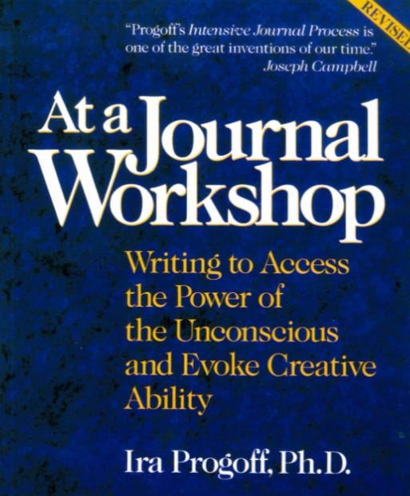

Baltimore
September 30 Wednesday
1-4 pm EDT
Experience Intensive Journal® workshops to develop your life.
A classic tool for gaining clarity and awareness about your evolving life.
A 60 year track record of helping thousands!
Upcoming Workshop
Explore our programs in mindfulness, journaling, and personal growth
Advanced Workshops
Life Study Seminar
An in-depth continuation of journal work for those who have completed foundational programs.
In-Person Programs
Life Study Seminar
A multi-day immersive experience held in a retreat setting, ideal for deep journal work.
Registration Questions?
Call: 330-998-6000
Experience the Method at Our 3 Hour Introductory Session - only $25!
Learn key principles for using the Intensive Journal method and experience sample exercises. This is not a sales session - it is 3 hours of a workshop.
Next sessions:
Denver
November 1 Sunday
1-4 pm MST
Denver
November 1 Sunday
1-4 pm MST

Award-Winning Book by Ira Progoff, PhD
Describes the Intensive Journal exercises and principles.
Selected as one of the 65 most significant books on psychology & spirituality of the 20th century.Source: Common Boundary,"Simply the Best," Jan-Feb, 1999
$19.95
Workshops are offered nationwide and year-round
Experience the method by attending a workshop where our leaders will guide you step-by-step
through the exercises. People attend our Intensive Journal Programs for many reasons.
Connect with your life
The Intensive Journal method can help you get in touch with yourself, including the direction and continuity of your life. What makes you unique and special?
Spur creativity
Develop creative life beyond work. The method helps you tap into your talents and interests. Obtain insights from different areas of your life.
Spiritual development
Use the Intensive Journal method to develop spiritually. Progoff emphasized the importance of becoming connected to the meaning and purpose of life.
Professional development
Professionals in addiction counselling, nursing, and social work can obtain continuing education credits to develop themselves.
The Method
The Intensive Journal Method
More than "journal writing", our method is based upon principles of psychology, providing you with unique approaches to develop your life. The Intensive Journal method is recognized as the leader in self-development writing programs.